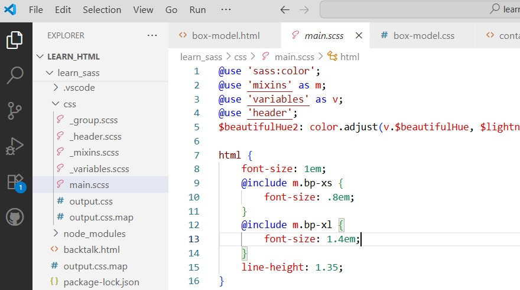

Project: CSS
Exploring the power of style.
CSS - Cascading Style Sheets
Stylish and Responsive Design
Fall 2024 - present
Recently I picked up Brad Schiff's Udemy tutorial on HTML & CSS. This tutorial covers so many fun things, including Bootstrap, Sass, and pushing a website up onto GitHub's hosting for free.
There is also a thorough example of mobile-first classes with standard breakpoints for responsive design as well as many page layouts demonstrating common techniques such as flexbox and css grids.

Read on for more highlights!
Tutorial Review
Web Design for Beginners: Real World Coding in HMTL & CSS
Brad Schiff's HTML & CSS Tutorial on Udemy.com
Audience
Are you a developer looking for a good HTML/CSS tutorial to make sure you've covered your bases?
If you're like me, you've worked with some HTML and CSS, and even created PHP templates as a web developer, but may wish you had a comprehensive introduction so that you know that you know (and making pages like the one above is straightforward). Brad Schiff's tutorial checks all the boxes. In this independent review I'll walk you through some highlights!
Outline
- Quick Facts
- Requirements
- Some of My Favorite Aspects
- Development Environment & Tools
- Working with Images and Overlapping Content
- Vector Graphics (Figma) & Gradients
- Responsive Design
- CSS Flexbox and Grid
- CSS Transitions & Animations
- Bootstrap
- Sass
- GitHub and GitHub Pages
- Conclusion
Quick Facts:
- Title: Web Design for Beginners: Real World Coding in HMTL & CSS
- Author: Brad Schiff
- Source: udemy.com
- Time: 11.5 hrs
- Lessons: 74 Lectures
- Level: All Levels
- Ratings: 4.5 Stars, 26,477 ratings
- Cost: $22.99 (on sale from $139.99)
Requirements
At a minimum, what you need to get started is your laptop (using Visual Studio Code on smaller devices may be too small!), an internet connection, a set of earbuds unless everyone around you is going to be doing the tutorial with you, a Udemy.com account, and the course registration for $22.99 (normally $139.99). Brad Schiff will step you through all the rest.
Some of My Favorite Aspects
In this tutorial, Brad is specific, concrete, and clear.
He starts out simple enough that even someone new to HTML will be able to follow along, but he handles important topics like Responsive Design from multiple angles and introduces popular 'tools' such as Bootstrap and Sass in such a straightforward way that it is fairly painless to set these up on your own machine and start working with them.
As I was going through this tutorial, I made sample web pages on my laptop to test out each topic. Typically starting from scratch or with pages done earlier, I used original photos, and the resource files for the lesson were there if I got stuck. The result? A sampler of work that I can refer back to when I want to use it.

For example, a banner header like this was only one of many things the tutorial covered.
The great thing about an online tutorial is that you can pause, rewind, or even watch the video multiple times. Udemy keeps track of all the rest and of course issues a certificate on completion.
Development Environment & Tools

While Visual Studio Code is as familiar for many developers as their own livingroom, for some it may be new. Brad lays out a basic path for setting up VSCode and setting up project pages in it. He does this over and over as each new tool or concept is introduced - from installing the Sass Preprocessor to using Figma or Bootstrap - he will walk you through what you need to do.
Working with Images and Overlapping Content

Working with overlapping content was one of my favorite 'recipes' from this tutorial. Seen all over the web, great banners and transparent content give depth to a site, so this is rewarding to replicate!
Vector Graphics (Figma) & Gradients

Brad covers vector graphics and gradients and introduces working with Figma. CSS Sprites are explained - for example, this house turns blue when the cursor hovers over it.
Responsive Design

Cellphones, Tablets, Laptops, and Desktops (and up). Brad makes sense out of media queries, Mobile-First design, and an alternative that designs for the medium range devices (laptops) and scales up or down from there.
CSS Flexbox and Grid
One thing I noticed about Brad's tutorials is that he updates them over time. If a concept has been replaced by a better alternative, he will redo or amend that topic. Flexbox is a good example where he circled back a number of years after originally making the lessons to update the methods for columns and rows to use a new and better approach: Flexbox! To be honest, as a consumer this will keep me coming back because I trust that the content is being actively curated.
CSS Transitions & Animations
Key Feature 1
This little example uses CSS animation to bounce (on page load) and spin (on hover).
Bootstrap

Setting up Bootstrap was a straightforward process in this tutorial, and I liked being able to quickly get up to speed with the dev environment so I could start trying out the framework classes. The accordion was one of my favorites!
Sass

Here again, stepping through the tutorial made setup a breeze and quickly got me up and running with Sass. Brad explains mixins, how variables are used, the nested nature of Sass, and so much more.
GitHub and GitHub Pages

In this section, Brad walks users through setting up repositories, introduces the desktop app, and shows how to turn local pages into an online website through GitHub's public-facing and free 'Pages' hosting. Great!
Wrapping Up
If you're looking for a great tutorial to brush up on your HTML & CSS skills, or if you want to take a step forward with some new-to-you technology such as Sass or Bootstrap, here's a way to up your game as a web developer. I highly recommend Brad Schiff's tutorial! (Wish I had found this years ago!) See my earlier HTML project here: HTML Project